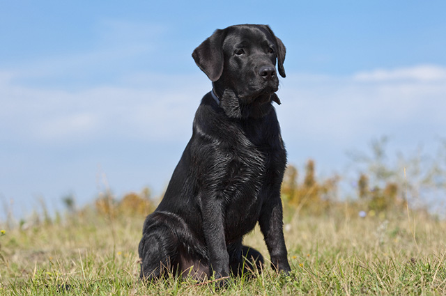

Ted, é um cão de bom temperamento, muito ágil, excelente faro e apaixonado por água. Capaz de se adaptar em qualquer lugar; companheiro fiel. Inteligente, vivo e obediente, com muita vontade de agradar.

Chop é apenas um cachorro com grande instinto de proteção e lealdade ao seu tutor. O cão dessa raça pode ser dócil, carinhoso e ótimo companheiro para a família, quando treinado.

Zeus é Leal, inteligente e com um forte instinto protetor, é uma das raças mais obedientes e com grande habilidade para aprender e absorver comandos. Além disso, também é muito resistente e veloz.